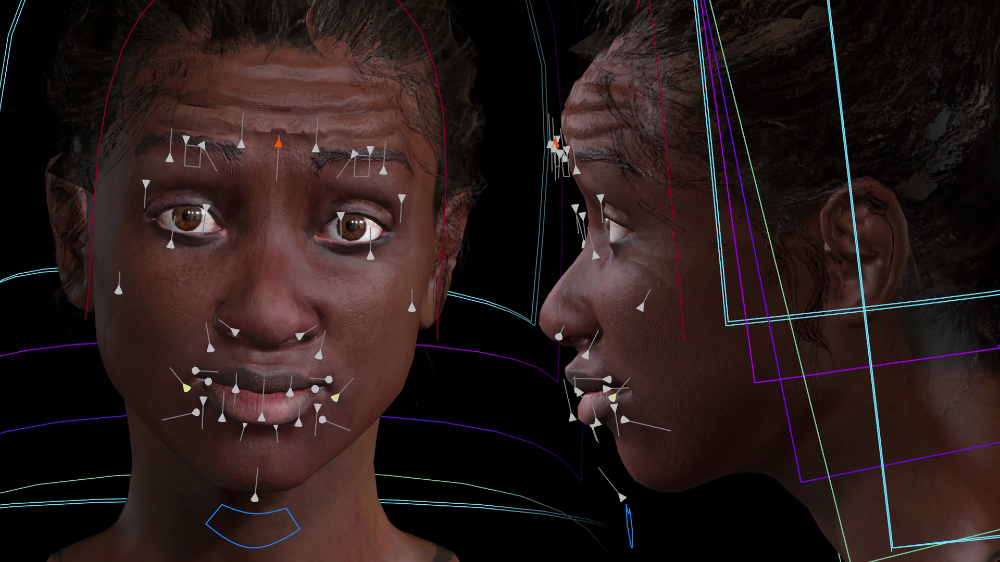
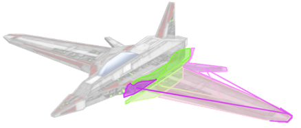

2026 In-Situ Interactions for Direct Manipulation of Parameterized Scenes Joonho Kim / PhD thesis, University of Toronto PDF 
2026 In-situ Visual Querying and Navigation of Dependency Graph Structures Joonho Kim, Karan Singh PDF 
2025 Squidgets: Sketch-based Widget Design for Scene Manipulation Joonho Kim, Fanny Chevalier, Karan Singh / ACM UIST 2025 Honorable Mention Award, top 5% PDF Project page
2021 Optimizing UI Layouts for Deformable Face-Rig Manipulation Joonho Kim, Karan Singh / ACM SIGGRAPH 2021 PDF Project page